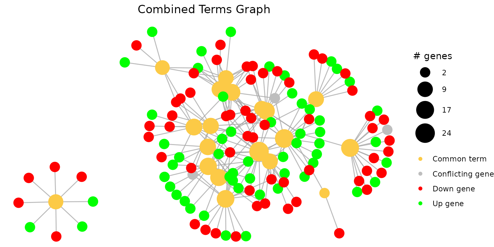
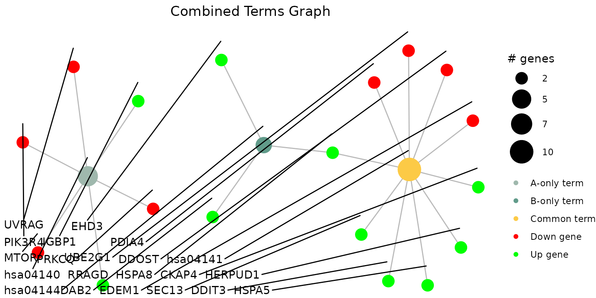

The function combine_pathfindR_results() allows
combination of two pathfindR active-subnetwork-oriented enrichment
analysis results for investigating common and distinct terms between the
groups. Below is an example for comparing results using two different
rheumatoid arthritis-related data sets
(example_pathfindR_output and
example_comparison_output).
combined_df <- combine_pathfindR_results(
result_A = example_pathfindR_output,
result_B = example_comparison_output,
plot_common = FALSE
)
#> You may run `combined_results_graph()` to create visualizations of combined term-gene graphs of selected termsBy default, combine_pathfindR_results() plots the
term-gene graph for the common terms in the combined results. For not
plotting the graph, set plot_common = FALSE.
The function combined_results_graph() can be used to
create this graph (using only selected terms etc.) later on. By default,
the function creates the graph using all common terms:
combined_results_graph(combined_df)
#> Warning: ggrepel: 12 unlabeled data points (too many overlaps). Consider
#> increasing max.overlaps
By supplying a vector of selected terms to the
selected_terms arguments, you may plot the term-gene graph
for the selected terms:
combined_results_graph(
combined_df,
selected_terms = c("hsa04144", "hsa04141", "hsa04140")
)
By default, combined_results_graph() creates the graph
using term IDs. To use term descriptions instead, set
use_description = TRUE:
combined_results_graph(
combined_df,
use_description = TRUE,
selected_terms = combined_df$Term_Description[1:4]
)For changing the layout of the graph ("auto" by
default), you may use the layout argument.
For changing how the sizes of the term nodes are determined, you may
use the node_size argument. The options are
"num_genes" (default) and "p_val" for using
the number of significant genes in the term and the -log10(p) value of
the term, respectively:
combined_results_graph(
combined_df,
selected_terms = c("hsa04144", "hsa04141", "hsa04140"),
node_size = "p_val"
)